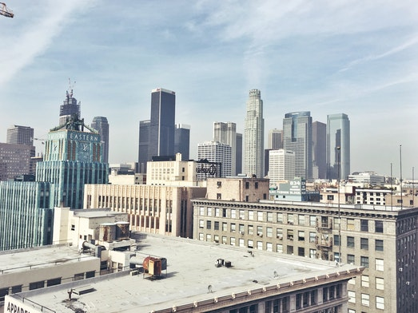

Los Angeles
История города
На прибрежных территориях, занимаемых сейчас Лос-Анджелесом, в XVI веке жили индейцы тонгва и чумаши. Первым европейцем, приставшим к берегу в районе нынешнего Лос-Анджелеса в 1542 году на двух кораблях «Сан Сальвадор» и «Ла Виктория» (водоизмещением 50 тонн каждое), стал мореплаватель Хуан Родригес Кабрильо (лоцманом и заместителем его был Бартоломео Феррело). Отплыв из Ла Навидад (Мексика) 27 июля 1542 года, Кабрильо высадился в бухте Сан Диего 28 сентября. В то время на берегу существовала индейская деревня Янг-На. Сам первооткрыватель умер 3 января 1543 года и похоронен на острове Сан-Мигель, названном впоследствии его именем «Хуан Родригес» (Juan Rodríguez). О своём плавании Родригес Кабрильо записал в журнале, который привёз его лоцман, и теперь он хранится в одном из архивов Севильи (Испания). Лишь спустя 227 лет здесь высадилась следующая экспедиция под начальством Гаспара Портола, в которой участвовал францисканский миссионер Хуан Креспи, отметивший в своих записках пригодность местности для поселения. В 1771 году другой миссионер, Хуниперо Серра, основал на этом месте миссию, названную в честь архангела Гавриила. К тому времени на территории современного Лос-Анджелеса существовало около 30 поселений индейцев тонгва, где проживало около 3 тыс. человек. 4 сентября 1781 года, по настоянию губернатора обеих Калифорний Фелипе де Неве, рядом с миссией группой испанских колонистов, состоящей из 46 человек, был основан посёлок под названием El Pueblo de Nuestra Señora la Reina de los Ángeles sobre El Río Porciúncula (с исп. — «Селение Девы Марии, Царицы Ангелов, на реке Порсьюнкула»). Несколько десятилетий новое поселение оставалось всего лишь маленьким городком, но к 1820 году это было уже крупнейшее светское поселение в Калифорнии: здесь жило 650 человек. Центр города ночью После провозглашения независимости Мексики Лос-Анджелес непродолжительно входил в её состав. После поражения Мексики в американо-мексиканской войне город перешёл к США по мирному договору 1848 года. В 1850 году Лос-Анджелес получил официальный статус города. Лос-Анджелес в 1869 году В 1876 году компания Southern Pacific завершила строительство железной дороги до Лос-Анджелеса[11]. Цитрусовое плодоводство, особенно выращивание апельсинов, скоро стало основой местного хозяйства. За последние сорок лет XIX века население выросло с 2,3 тыс. до 100 тыс. жителей. В 1892 году в районе города были обнаружены залежи нефти и к 1923 году на район Лос-Анджелеса приходилась четверть всего мирового производства этого углеводорода[12]. В 1913 году Уильям Малхолланд завершил строительство акведука, который обеспечил водой растущий Лос-Анджелес. С 1920-х годов в Лос-Анджелесе быстрыми темпами стали развиваться авиационная промышленность и открываться киностудии. В 1932 году город принял X летние Олимпийские игры.Нефтяные вышки в Лос-Анджелесе (1896) Начало Второй мировой войны придало новый импульс развитию города. В этот период в город переселился ряд немецких деятелей науки, культуры и искусства, бежавших от нацизма (среди них Лион Фейхтвангер, Томас Манн, Фриц Ланг, Бертольд Брехт и др.). В 1942 году тысячи жителей Лос-Анджелеса японского происхождения были выселены в закрытые лагеря за пределы города. Интернирование проводилось в соответствии с правительственным распоряжением № 9066, подписанным президентом Франклином Рузвельтом.Вермонт-авеню на юге Лос-Анжелеса. В послевоенные годы город бурно развивался и рос вширь; строились многочисленные транспортные развязки, небоскрёбы. К 1970 году центральная часть города не только опустела, но, по словам некоторых опрошенных жителей, стала казаться «чужой и даже враждебной». В отношении Лос-Анжелеса употребляли такие определения, как «пригороды в поисках города», «прототип супергорода», «автопия» (зона, выделенная исключительно для движения автотранспорта). 5 июня 1968 года в Лос-Анджелесе был застрелен сенатор и кандидат в президенты США Роберт Кеннеди — брат 35-го президента США Джона Кеннеди, убитого в ноябре 1963 года. В 1984 году в Лос-Анджелесе вновь была проведена летняя Олимпиада, в которой не принимали участие спортсмены из стран социалистического лагеря.В 1992 году в Лос-Анджелесе произошли массовые беспорядки, крупнейшие с 1960-х годов, спровоцированные процессом над четырьмя белыми полицейскими, уличёнными в избиении афроамериканца, но оправданными на суде. В беспорядках нашла выход накопившаяся национальная неприязнь: главными жертвами толпы стали корейские лавочники. Всего 55 человек было убито и 2 тыс. ранено. После шести дней беспорядков в город были введены армейские подразделения, произведены более 10 тыс. арестов. В 1994 году город пережил разрушительное землетрясение, повредившее многие дома и объекты городской инфраструктуры. После этих событий набрало силу движение за отделение Голливуда и долины Сан-Фернандо от Лос-Анджелеса, но всеобщее голосование 2002 года не позволило осуществиться этим планам.В конце XX — начале XXI века многие кварталы города (среди которых Голливуд, Сильвер-Лейк, центральная часть города, Корейский квартал) подверглись джентрификации.
Интересные факты
- Los Angeles - один из самых больших центров в индустрии кинематографии
- Этот город разделён на несколько районов: тут есть китайский район, японский и даже русский!
- Этот город - гастрономический рай для любого. Здесь вы можете попробовать всё: от самого вкусного мороженного в вашей жизни и до самого острого мяса которое вы только ели!
- Недалеко от Los Angeles в городе San Francisco находится крупнейший в мире центр технологий - здесь находятся штаб-квартиры таких компаний как Adobe, AMD, Apple, eBay, Electronic Arts, Facebook, Google, Hewlett-Packard, Intel, Nvidia, SanDisk, Yahoo! и другие!